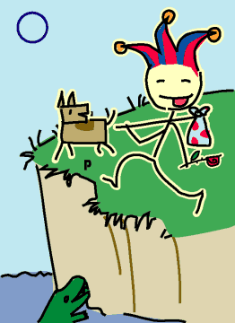

→
Damian Cugley →
Alleged Tarot 2002 →
png →
→
Damian Cugley →
Alleged Tarot 2002 →
png →
| « The King of Coins | I. The Magician » | |
|  | ||
Upright: sponteneity, trust, taking a risk
Reversed: recklessness, irresponsibility
The Fool represents a lucky chancer—happy to take things as they come, and not afraid to trust to his fate. The Fool would rather smell the roses than worry too much about the wild animals that he wanders amongst or the cliff at his feet or the little dog who is trying to warn him to pay attention. But that’s OK, at least up to a point.
When the Major Arcana are viewed as a journey from ignorance to wisdom, the Fool represents the start of the journey (or of a new journey, or a new cycle). The pack can be interpreted as spiritual baggage (or past karma) of which the Fool is not consciously aware.
The jester’s hat stands in for motley (which does not show up very will in stick figures!). The Fool is sometimes drawn as a beggar—both of these occupations are ones where you own little and have no responsibilities.
The Fool is the only Major Arcana card to survive to the modern playing-card deck.
See also Thirteen’s description on the Aeclectic Tarot site
If your browser supports SVG, then you should visit the SVG version of this page. It is so much more cool!